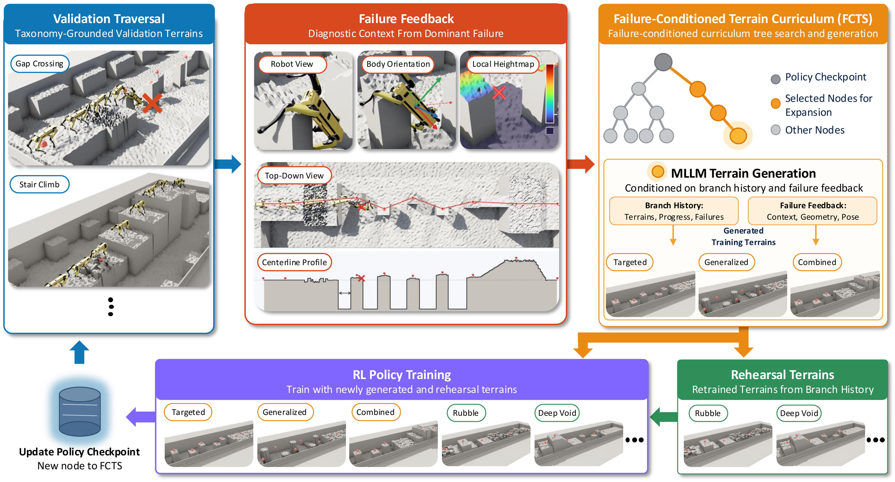
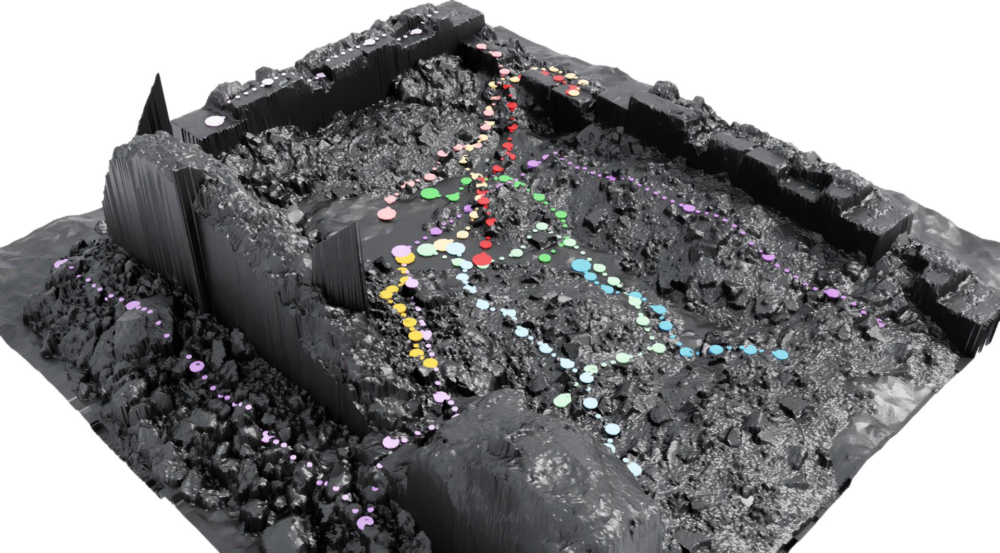
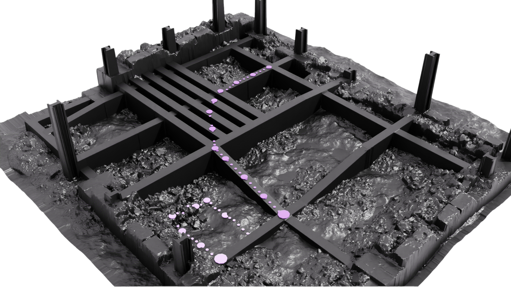

Localized traversal failures generate the terrain a quadruped policy trains on next, and Monte Carlo tree search spends a fixed budget across competing curriculum trajectories.
The method, the search, the results and the hardware experiments, in two minutes fifty-four.
FCTS turns each localized traversal failure into the terrain a policy trains on next, and searches over competing curricula with tree search. On held-out courses rebuilt from scanned sites it raises success from 28.4% to 85.8% on a medium course and from 14.9% to 44.7% on a hard one, and transfers to a physical quadruped.
Validation failures drive terrain generation; parallel tree search explores alternative improvement trajectories. Step through the loop, or let it run.

Checkpoints are nodes, edges are full training runs. PUCT balances exploitation against exploration, values back up with a maximum, and the winning branch follows the highest backed-up Q from the root. Parallel search completes 25 expansions in 24 hours, 5.3× the sequential rate.
Both environments are rebuilt from scanned geometry and held out from curriculum generation and training. Routes are fixed before evaluation and stratified by local relief, the height variation inside the robot's 0.4 m footprint.


Uncut follow-cam runs once the search has finished.
The fixed set every checkpoint is scored on during the search.
Held-out reconstructed geometry, never used to generate curricula or train.
The policy selected from the search portfolio, deployed without retuning. Control runs at 50 Hz on an onboard Jetson AGX Orin, using depth and proprioception.
Three regions of the Debris site. All policies start from the same checkpoint on the same route; players are synchronized, and each baseline freezes where its robot fails.
| Tier | Method | Success (%) | Progress IQM | Waypoints (%) |
|---|
Quadruped parkour policies handle canonical obstacles well, but their curricula miss the irregular, compound geometry of industrial and disaster-response sites. Even training directly on reconstructed geometry from the target site does not reliably yield policies that traverse it.
FCTS uses localized traversal failures to generate the terrain a policy should train on next. Each failure's location, termination mode, robot state and surrounding geometry condition that generation, and Monte Carlo Tree Search explores alternative curriculum trajectories under a fixed budget.
On terrains built from scanned construction sites, FCTS raises success from 28.4% to 85.8% on a medium course and from 14.9% to 44.7% on a hard course, and transfers to a physical quadruped.
@article{fcts2026,
title = {FCTS: Failure-Guided Curriculum Tree Search Over Generated Terrain for Legged Parkour},
author = {TBD},
year = {2026}
}